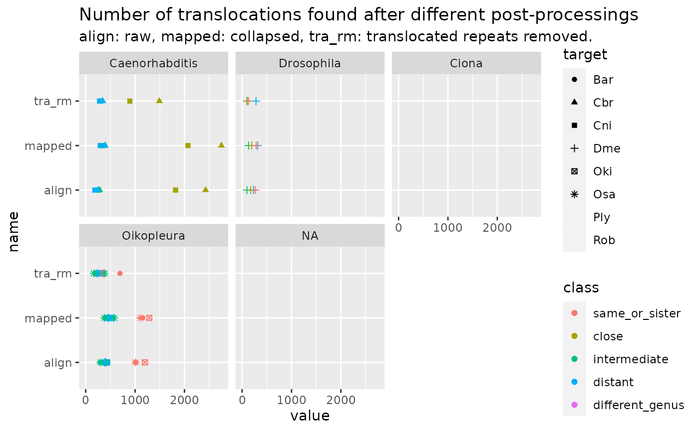

Translocations
Charles Plessy
13 October, 2023
Source:vignettes/Translocations.Rmd
Translocations.Rmd
knitr::opts_chunk$set(cache = TRUE, cache.lazy = FALSE)
knitr::opts_knit$set(verbose = TRUE)Introduction
After coalescing colinear alignments, removing translocations of repeat-containing sequences and re-coalescing, colinearity is still broken hundreds of time.
Here we explore the role of translocations in scrambling Oikopleura genomes.
Load R pacakges and data
library('OikScrambling') |> suppressPackageStartupMessages()
load("BreakPoints.Rdata")See
vignette("LoadGenomicBreaks", package = "OikScrambling")
for how the different GBreaks objects are prepared.
Documentation
Details can be found in
vignette("GenomicBreaks", package = "GenomicBreaks"), in
vignette("StructuralVariants", package = "GenomicBreaks"),
and ?GenomicBreaks::flagTranslocations
A couple of examples
The block in blue sky color map on the same sequence as their neighbors, but not colinearly. The span of unaligned regions between them varies greatly.
showTranslocations(coa$Oki_Kum |> flagTranslocations()) -> x
plotApairOfChrs(x[1:3] |> swap() |> sort(i=T))
plotApairOfChrs(x[4:6])
plotApairOfChrs(x[7:9])Number of translocations
Notes:
Translocations in a genomic context ressembling insertion/deletion are removed in the
coa2objects.At the moment, the
flagTranslocationsfunction only searches the target genome.
trans_summary <- data.frame(
align = sapply(gbs, function(gb) sum(flagTranslocations(gb)$tra)),
mapped = sapply(coa, function(gb) sum(flagTranslocations(gb)$tra)),
tra_rm = sapply(coa2, function(gb) sum(flagTranslocations(gb)$tra))
)
trans_summary$pairname <- OikScrambling:::compDistance(rownames(trans_summary))
trans_summary$class <- OikScrambling:::compDistClass(rownames(trans_summary))
trans_summary$genus <- OikScrambling:::compGenus(rownames(trans_summary))
trans_summary$target <- sub("_.*", "", rownames(trans_summary))
ggplot(trans_summary |> tidyr::pivot_longer(c("align", "mapped", "tra_rm"))) +
aes(value, name) + geom_point(aes(col = class, pch = target)) +
ggtitle ("Number of translocations found after different post-processings",
subtitle = "align: raw, mapped: collapsed, tra_rm: translocated repeats removed.") +
facet_wrap(~genus)## Warning: The shape palette can deal with a maximum of 6 discrete values because
## more than 6 becomes difficult to discriminate; you have 8. Consider
## specifying shapes manually if you must have them.## Warning: Removed 24 rows containing missing values (`geom_point()`).
Click here to see the raw data
trans_summary## align mapped tra_rm pairname class genus target
## Oki_Osa 428 513 276 Oki – North distant Oikopleura Oki
## Oki_Bar 389 461 252 Oki – North distant Oikopleura Oki
## Oki_Kum 1199 1288 252 In same pop same_or_sister Oikopleura Oki
## Oki_Aom 437 524 294 Oki – North distant Oikopleura Oki
## Oki_Nor 422 532 342 Oki – North distant Oikopleura Oki
## Osa_Oki 385 453 236 Oki – North distant Oikopleura Osa
## Osa_Bar 296 376 164 North – North intermediate Oikopleura Osa
## Osa_Kum 395 463 245 Oki – North distant Oikopleura Osa
## Osa_Aom 1010 1104 355 In same pop same_or_sister Oikopleura Osa
## Osa_Nor 410 576 383 North – North intermediate Oikopleura Osa
## Bar_Oki 355 422 229 Oki – North distant Oikopleura Bar
## Bar_Osa 296 400 201 North – North intermediate Oikopleura Bar
## Bar_Kum 368 432 225 Oki – North distant Oikopleura Bar
## Bar_Aom 297 390 191 North – North intermediate Oikopleura Bar
## Bar_Nor 1011 1156 694 In same pop same_or_sister Oikopleura Bar
## Ply_Ros 1581 1734 626 Int – Int same_or_sister Ciona Ply
## Ply_Rob 876 1011 393 Int – Rob close Ciona Ply
## Ply_Sav 133 227 225 Int/Rob – Sav distant Ciona Ply
## Ply_Oki 3 4 4 Int/Rob – Oki different_genus <NA> Ply
## Rob_Ros 952 1127 617 Int – Rob close Ciona Rob
## Rob_Ply 1106 1392 885 Int – Rob close Ciona Rob
## Rob_Sav 128 238 235 Int/Rob – Sav distant Ciona Rob
## Rob_Oki 9 10 10 Int/Rob – Oki different_genus <NA> Rob
## Dme_Dbu 231 316 280 Dme_Dbu distant Drosophila Dme
## Dme_Dsu 98 131 96 Dme_Dsu intermediate Drosophila Dme
## Dme_Dya 173 194 106 Dme_Dya close Drosophila Dme
## Dme_Dma 266 285 134 Dme_Dma same_or_sister Drosophila Dme
## Cni_Cbr 1820 2071 894 Cni_Cbr close Caenorhabditis Cni
## Cni_Cre 260 362 303 Cni_Cre intermediate Caenorhabditis Cni
## Cni_Cin 186 295 282 Cni_Cin distant Caenorhabditis Cni
## Cbr_Cni 2428 2749 1491 Cbr_Cni close Caenorhabditis Cbr
## Cbr_Cre 281 395 344 Cbr_Cre intermediate Caenorhabditis Cbr
## Cbr_Cel 246 390 340 Cbr_Cel distant Caenorhabditis CbrThe number of detected translocations increase after coalescing, because the translocated region itself may have a double gap interrupting the alignment. Then, it logically decreases when the repeat-associated translocations are removed.
Small translocations
Translocations are “small” when the flanking colinear regions are longer.
Small translocations are a majority. Only in same-population comparison they seem to associate strongly with repeats.
flagSmallTranslocations <- function (a) {
a <- flagTranslocations(a)
a$w0 <- width(a)
a$w1 <- c(tail(a$w0, -1), NA)
a$w2 <- c(tail(a$w0, -2), NA, NA)
a$midSmaller <- (a$w0 + a$w2 > 2 * a$w1) & a$tra
a
}
smallTransObjs <- SimpleList(
align_s = sapply(gbs, flagSmallTranslocations),
mapped_s = sapply(coa, flagSmallTranslocations),
tra_rm_s = sapply(coa2, flagSmallTranslocations)
)
cbind( trans_summary
, smallTransObjs |> sapply(sapply, \(gb) sum(gb$midSmaller)))## align mapped tra_rm pairname class genus target
## Oki_Osa 428 513 276 Oki – North distant Oikopleura Oki
## Oki_Bar 389 461 252 Oki – North distant Oikopleura Oki
## Oki_Kum 1199 1288 252 In same pop same_or_sister Oikopleura Oki
## Oki_Aom 437 524 294 Oki – North distant Oikopleura Oki
## Oki_Nor 422 532 342 Oki – North distant Oikopleura Oki
## Osa_Oki 385 453 236 Oki – North distant Oikopleura Osa
## Osa_Bar 296 376 164 North – North intermediate Oikopleura Osa
## Osa_Kum 395 463 245 Oki – North distant Oikopleura Osa
## Osa_Aom 1010 1104 355 In same pop same_or_sister Oikopleura Osa
## Osa_Nor 410 576 383 North – North intermediate Oikopleura Osa
## Bar_Oki 355 422 229 Oki – North distant Oikopleura Bar
## Bar_Osa 296 400 201 North – North intermediate Oikopleura Bar
## Bar_Kum 368 432 225 Oki – North distant Oikopleura Bar
## Bar_Aom 297 390 191 North – North intermediate Oikopleura Bar
## Bar_Nor 1011 1156 694 In same pop same_or_sister Oikopleura Bar
## Ply_Ros 1581 1734 626 Int – Int same_or_sister Ciona Ply
## Ply_Rob 876 1011 393 Int – Rob close Ciona Ply
## Ply_Sav 133 227 225 Int/Rob – Sav distant Ciona Ply
## Ply_Oki 3 4 4 Int/Rob – Oki different_genus <NA> Ply
## Rob_Ros 952 1127 617 Int – Rob close Ciona Rob
## Rob_Ply 1106 1392 885 Int – Rob close Ciona Rob
## Rob_Sav 128 238 235 Int/Rob – Sav distant Ciona Rob
## Rob_Oki 9 10 10 Int/Rob – Oki different_genus <NA> Rob
## Dme_Dbu 231 316 280 Dme_Dbu distant Drosophila Dme
## Dme_Dsu 98 131 96 Dme_Dsu intermediate Drosophila Dme
## Dme_Dya 173 194 106 Dme_Dya close Drosophila Dme
## Dme_Dma 266 285 134 Dme_Dma same_or_sister Drosophila Dme
## Cni_Cbr 1820 2071 894 Cni_Cbr close Caenorhabditis Cni
## Cni_Cre 260 362 303 Cni_Cre intermediate Caenorhabditis Cni
## Cni_Cin 186 295 282 Cni_Cin distant Caenorhabditis Cni
## Cbr_Cni 2428 2749 1491 Cbr_Cni close Caenorhabditis Cbr
## Cbr_Cre 281 395 344 Cbr_Cre intermediate Caenorhabditis Cbr
## Cbr_Cel 246 390 340 Cbr_Cel distant Caenorhabditis Cbr
## align_s mapped_s tra_rm_s
## Oki_Osa 267 417 235
## Oki_Bar 241 383 215
## Oki_Kum 1060 1233 227
## Oki_Aom 275 429 250
## Oki_Nor 252 427 280
## Osa_Oki 253 375 204
## Osa_Bar 211 329 134
## Osa_Kum 262 390 211
## Osa_Aom 862 1036 293
## Osa_Nor 292 496 324
## Bar_Oki 224 349 191
## Bar_Osa 223 350 160
## Bar_Kum 243 361 190
## Bar_Aom 224 353 154
## Bar_Nor 777 986 570
## Ply_Ros 1227 1561 511
## Ply_Rob 658 941 352
## Ply_Sav 51 191 190
## Ply_Oki 2 3 3
## Rob_Ros 705 987 511
## Rob_Ply 776 1143 662
## Rob_Sav 62 208 205
## Rob_Oki 4 6 6
## Dme_Dbu 129 291 259
## Dme_Dsu 72 130 95
## Dme_Dya 154 186 100
## Dme_Dma 215 249 114
## Cni_Cbr 1464 1892 821
## Cni_Cre 142 339 285
## Cni_Cin 109 272 258
## Cbr_Cni 1933 2473 1328
## Cbr_Cre 145 369 322
## Cbr_Cel 125 366 318